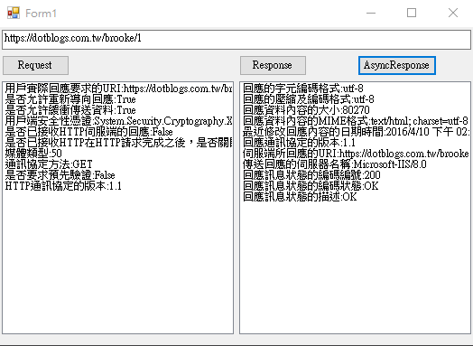

using System;
using System.Collections.Generic;
using System.ComponentModel;
using System.Data;
using System.Drawing;
using System.Linq;
using System.Text;
using System.Threading.Tasks;
using System.Windows.Forms;
using System.Net;
namespace LearningBeginGetResponse
{
public partial class Form1 : Form
{
HttpWebRequest _request = null;
HttpWebResponse _response = null;
public Form1()
{
InitializeComponent();
}
private void btnRequest_Click(object sender, EventArgs e)
{
lbRequestMsg.Items.Clear();
this._request = (HttpWebRequest)WebRequest.Create(txtUri.Text);
this._request.Method = WebRequestMethods.Http.Get;//預設為GET
this.lbRequestMsg.Items.Add("用戶實際回應要求的URI:" + this._request.Address.ToString());
this.lbRequestMsg.Items.Add("是否允許重新導向回應:" + this._request.AllowAutoRedirect.ToString());
this.lbRequestMsg.Items.Add("是否允許緩衝傳送資料:" + this._request.AllowWriteStreamBuffering.ToString());
this.lbRequestMsg.Items.Add("用戶端安全性憑證:" + this._request.ClientCertificates.ToString());
if (this._request.Connection != null)
this.lbRequestMsg.Items.Add("與伺服端保持持續性的連結至下達close參數為止:" + this._request.Connection.ToString());
if (this._request.ConnectionGroupName != null)
this.lbRequestMsg.Items.Add("連結群組名稱:" + this._request.ConnectionGroupName.ToString());
if (this._request.ContentLength != -1)
this.lbRequestMsg.Items.Add("傳送資料內容的大小:" + this._request.ContentLength.ToString());
if (this._request.ContentType != null)
this.lbRequestMsg.Items.Add("傳送資料內容的MIME格式:" + this._request.ContentType.ToString());
this.lbRequestMsg.Items.Add("是否已接收HTTP伺服端的回應:" + this._request.HaveResponse.ToString());
this.lbRequestMsg.Items.Add("是否已接收HTTP在HTTP請求完成之後，是否關閉與HTTP伺服端之連結:" + this._request.KeepAlive.ToString());
this.lbRequestMsg.Items.Add("媒體類型:" + this._request.MaximumAutomaticRedirections.ToString());
if (this._request.MediaType != null)
this.lbRequestMsg.Items.Add("媒體類型:" + this._request.MediaType.ToString());
this.lbRequestMsg.Items.Add("通訊協定方法:" + this._request.Method.ToString());
this.lbRequestMsg.Items.Add("是否要求預先驗證:" + this._request.PreAuthenticate.ToString());
this.lbRequestMsg.Items.Add("HTTP通訊協定的版本:" + this._request.ProtocolVersion.ToString());
}
private void btnResponse_Click(object sender, EventArgs e)
{
if (this._request == null)
return;
this.lbResponseMsg.Items.Clear();
this._response = (HttpWebResponse)this._request.GetResponse();
HttpStatusCode code = this._response.StatusCode;
int idNumber = (int)code;
this.lbResponseMsg.Items.Add("回應的字元編碼格式:" + this._response.CharacterSet.ToString());
this.lbResponseMsg.Items.Add("回應的壓縮及編碼格式:" + this._response.CharacterSet.ToString());
this.lbResponseMsg.Items.Add("回應資料內容的大小:" + this._response.ContentLength.ToString());
this.lbResponseMsg.Items.Add("回應資料內容的MIME格式:" + this._response.ContentType.ToString());
this.lbResponseMsg.Items.Add("最近修改回應內容的日期時間:" + this._response.LastModified.ToString());
this.lbResponseMsg.Items.Add("回應通訊協定的版本:" + this._response.ProtocolVersion.ToString());
this.lbResponseMsg.Items.Add("伺服端所回應的URI:" + this._response.ResponseUri.ToString());
this.lbResponseMsg.Items.Add("傳送回應的伺服器名稱:" + this._response.Server.ToString());
this.lbResponseMsg.Items.Add("回應訊息狀態的編碼編號:" + idNumber.ToString());
this.lbResponseMsg.Items.Add("回應訊息狀態的編碼狀態:" + this._response.StatusCode.ToString());
this.lbResponseMsg.Items.Add("回應訊息狀態的描述:" + this._response.StatusDescription.ToString());
this._response.Close();
}
private void btnAsyncResponse_Click(object sender, EventArgs e)
{
if (this._request == null)
return;
this.lbResponseMsg.Items.Clear();
//RequestState state = new RequestState();
IAsyncResult result = (IAsyncResult)this._request.BeginGetResponse(new AsyncCallback(Callback), this._request);
}
void Callback(IAsyncResult Result)
{
HttpWebRequest request = Result.AsyncState as HttpWebRequest;
HttpWebResponse response = request.EndGetResponse(Result) as HttpWebResponse;//取得資料
HttpStatusCode code = response.StatusCode;
int id = (int)code;
//跨執行緒更新
this.BeginInvoke(new delegateUpdateControl(UpdateControl), new object[] { lbResponseMsg, "回應的字元編碼格式:" + response.CharacterSet.ToString() });
this.BeginInvoke(new delegateUpdateControl(UpdateControl), new object[] { lbResponseMsg, "回應的壓縮及編碼格式:" + response.CharacterSet.ToString() });
this.BeginInvoke(new delegateUpdateControl(UpdateControl), new object[] { lbResponseMsg, "回應資料內容的大小:" + response.ContentLength.ToString() });
this.BeginInvoke(new delegateUpdateControl(UpdateControl), new object[] { lbResponseMsg, "回應資料內容的MIME格式:" + response.ContentType.ToString() });
this.BeginInvoke(new delegateUpdateControl(UpdateControl), new object[] { lbResponseMsg, "最近修改回應內容的日期時間:" + response.LastModified.ToString() });
this.BeginInvoke(new delegateUpdateControl(UpdateControl), new object[] { lbResponseMsg, "回應通訊協定的版本:" + response.ProtocolVersion.ToString() });
this.BeginInvoke(new delegateUpdateControl(UpdateControl), new object[] { lbResponseMsg, "伺服端所回應的URI:" + response.ResponseUri.ToString() });
this.BeginInvoke(new delegateUpdateControl(UpdateControl), new object[] { lbResponseMsg, "傳送回應的伺服器名稱:" + response.Server.ToString() });
this.BeginInvoke(new delegateUpdateControl(UpdateControl), new object[] { lbResponseMsg, "回應訊息狀態的編碼編號:" + id.ToString() });
this.BeginInvoke(new delegateUpdateControl(UpdateControl), new object[] { lbResponseMsg, "回應訊息狀態的編碼狀態:" + response.StatusCode.ToString() });
this.BeginInvoke(new delegateUpdateControl(UpdateControl), new object[] { lbResponseMsg, "回應訊息狀態的描述:" + response.StatusDescription.ToString() });
response.Close();
}
delegate void delegateUpdateControl(Control Ctrl, string Msg);
void UpdateControl(Control Ctrl, string Msg)
{
((ListBox)Ctrl).Items.Add(Msg);
}
}
}

參考資料：
WebRequest.BeginGetResponse 方法 (AsyncCallback, Object)
[C#.NET][Thread] 非同步作業 IAsyncResult / AsyncCallback
[C#.NET][TPL] 利用 Task.Factory.FromAsync / TaskCompletionSource 將 APM 轉換成 TAP